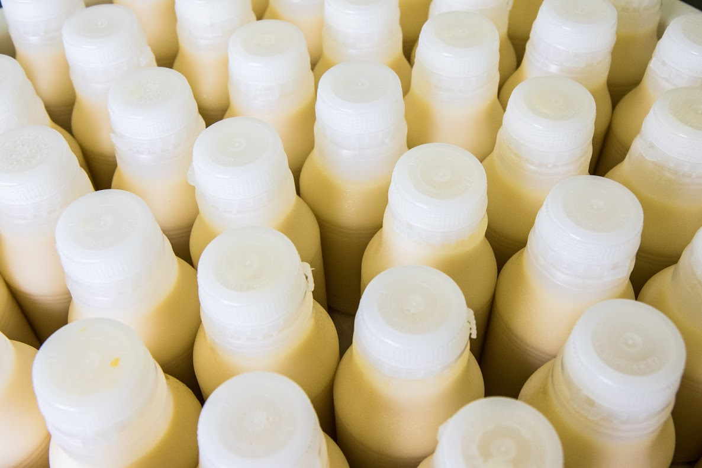

Nossa missão
A missão no nosso projeto é desenvolver processos e produtos que contribuam para a erradicação da subnutrição no Brasil, e compartilhar as informações de forma segura, verídica e simples para a comunidade externa à Universidade.

Foto: Lucas Braga
Nossa visão
Sermos reconhecidos pela excelência no estudo de estratégias para mitigação da subnutrição no Brasil, e contribuir com órgãos governamentais, indústrias e sociedade em geral, para soluções de problemas acerca do tema.

Foto: Lucas Braga
Resultados esperados
Fornecer informações com qualidade e segurança. Oferecer parceria e segurança alimentar e nutricional no cuidado da mãe e a criança. Contribuir para a manifestação de um bom estado nutricional infantil, adequado, seguro e satisfatório.

Foto: Lucas Braga